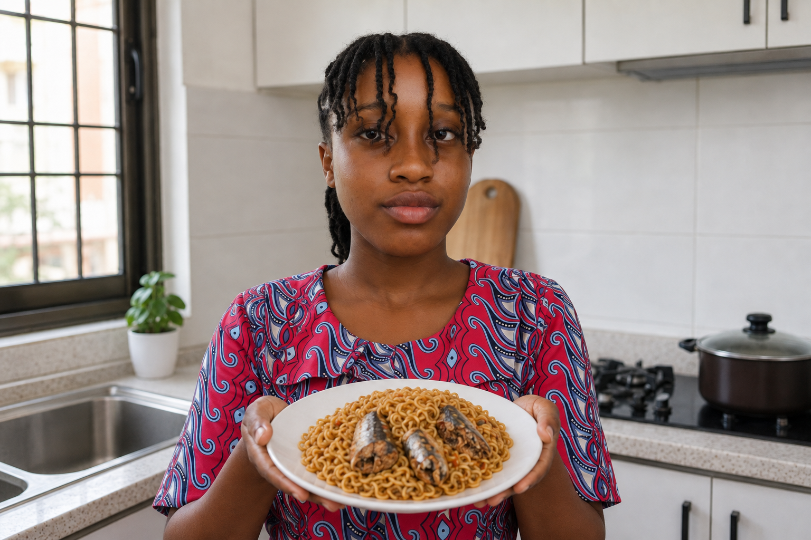

Noodles and Sardine Recipe
This is a simple and delicious recipe for noodles with sardines.
It's perfect for a quick lunch or dinner.
It's simple to make and packed with flavor.

Recipe Information
- Prep Time: 5 minutes
- Cook Time: 10 minutes
- Total Time: 15 minutes
- Servings: 2
Ingredients
- Noodles: 4 packs
- Sardines: 1 can in oil
- Soy sauce: 1 tablespoon
- Salt and pepper to taste: Add to taste
- Sausage: Chopped for garnish
Cooking Instructions
- Boil the noodles according to the package instructions.
- Drain the noodles and set aside.
- Open the can of sardines and flake them with a fork.
- In a large pan, heat the soy sauce and add the sardines.
- Stir everything together and let it simmer for a few minutes.
- Season with salt and pepper to taste.
- Serve the noodles in bowls and top with the sardine mixture and chopped sausage.
Serving Suggestions
Enjoy your Noodles and Sardine dish with your favourite drink.
Enjoy your delicious homemade meal!